6．解析数论
数论中的一个重要发展是解析方法和解析成果的导入，以表达和证明有关整数的事实。实际上，欧拉已经在数论中用了分析（见下面），雅可比用椭圆函数得到了同余论和型的理论中的一些结果(30)。然而欧拉在数论中对分析的使用是很少的，雅可比的数论成果几乎是他的分析著作的偶然的副产品。
分析的第一个深刻的经过精心考虑的用途是由狄利克雷（1805—1859）为了处理一个看来是明白的代数问题而作出的。他是高斯和雅可比的学生，在布雷斯劳和柏林当教授，后来在格丁根接替高斯。狄利克雷的伟大著作《数论讲义》（Vorlesungen über Zahlentheorie）(31)详细解释了高斯的《探讨》，并给出了他自己的贡献。
引起狄利克雷去应用分析的问题是证明每一个算术序列
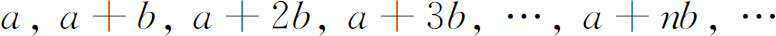
中包含无穷多个素数，这里a和b是互素的。欧拉(32)和勒让德(33)作出了这一猜想，在1808年勒让德(34)给出了一个证明，但含有错误，在1837年狄利克雷(35)给出了一个正确的证明。这个结果推广了欧几里得关于在序列1，2，3，…中包含有无穷多个素数的定理，狄利克雷的分析证明长而又繁。特别是他用了
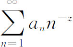
，现在被称为狄利克雷级数，其中an和z都是复数。狄利克雷还证明了在序列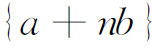
中的素数的倒数之和是发散的。这就推广了欧拉关于通常素数的结果（见下面）。在1841年(36)，狄利克雷证明了一个关于在复数a＋bi的级数中的素数的定理。围绕着引进分析的主要问题涉及函数
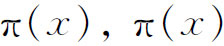
表示不超过x的素数的个数。例如，π（8）是4，因为2，3，5和7是素数，而π（11）是5。当x增加时，增添的素数变得稀疏起来，问题是π（x）的固有的分析表达式是什么？勒让德证明了不存在有理表达式，他曾在一个时期内放弃了可能找到任何表达式的希望。那时欧拉、勒让德、高斯和其他人都推测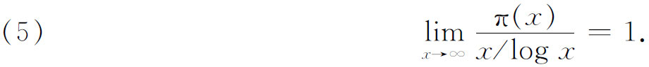
高斯利用素数表（他事实上研究了直到3000000的一切素数）对π（x）作了猜想，并推断(37)π（x）与
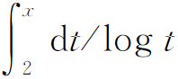
的差是很小的。他还知道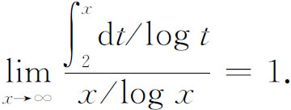
1848年，彼得格勒大学的教授切比雪夫（Pafnuti L．Tchebycheff，1821—1894）继续研究小于或等于x的素数个数的问题，并在这一古老问题上迈出了一大步。在一篇关键性的论文《论素数》(38)中，切比雪夫证明了
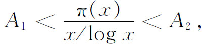
这里0．922＜A1＜1和1＜A2＜1.105，但是没有证明这个函数趋向于一极限。这个不等式为许多数学家所改进，这些人中包括詹姆斯·西尔维斯特（James Joseph Sylvester），他在1881年同其他一些人曾怀疑这个函数有极限。切比雪夫在他的著作中使用了
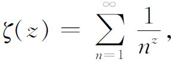
我们现在把它叫做黎曼ζ函数，可是，他是仅对z的实值应用这个函数的。（这个级数是狄利克雷级数的一种特殊情况。）在同一篇论文中，他还顺便证明了对n＞3，在n和2n－2之间至少总有一个素数存在。
实z的ζ函数出现在欧拉(39)的一本著作中，他在其中引进了
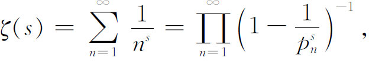
这里pn都是素数。欧拉用这个函数去证明素数的倒数之和是发散的。对s的偶的正整数值，欧拉知道ζ（s）的值（见第20章第4节）。然后在一篇宣读于1749年的论文(40)中，欧拉断言对实的s，
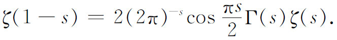
他说他验证这一方程一直到了对它无可怀疑的程度。这个关系式是由黎曼在1859年的一篇下面将要提到的论文中建立的。黎曼用了复数z的ζ函数去试图证明素数定理，即上面提到的（5）(41)。他指出，要再深入一步研究，就应当知道ζ（z）的复零点。实际上，当
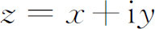
时，ζ（z）对x≤1不收敛，而ζ在半平面x≤1内的值是由解析开拓定义的。他叙述了一个假设：ζ在带形区域0≤x≤1中的一切零点都位于x＝1/2这条线上。这个假设一直还未被证明(42)。在1896年，阿达马（Jacques Hadamard）(43)应用（一个复变量的）整函数的理论，以及证明当x＝1时ζ（z）≠0这一决定性的事实，终于证明了素数定理；他研究整函数的目的就在于证明这个素数定理。瓦莱·普桑（Charles-Jean de la Vallée Poussin，1866—1962）关于ζ函数得到同样的结果，并同时证明了素数定理(44)。这个定理是解析数论的中心问题之一。
参考书目
Bachmann，P．：“Über Gauss' zahlentheoretische Arbeiten，”Nachrichten König．Ges．der Wiss．zu Gött．，1911，455-508；also in Gauss：Werke，102，1-69．
Bell，Eric T．：The Development of Mathematics，2nd ed．，McGraw-Hill，1945，Chaps．9-10．
Carmichael，Robert D．：“Some Recent Researches in the Theory of Numbers，”Amer．Math．Monthly，39，1932，139-160．
Dedekind，Richard：Über die Theorie der ganzen algebraischen Zahlen（reprint of the eleventh supplement to Dirichlet's Zahlentheorie），F．Vieweg und Sohn，1964．
Dedekind，Richard：Gesammelte mathematische Werke，3 vols．，F．Vieweg und Sohn，1930-1932，Chelsea（reprint），1968．
Dedekind，Richard：“Sur la théorie des nombres entiers algébriques，”Bull．des Sci．Math．，（1），11，1876，278-288；（2），1，1877，17-41，69-92，144-164，207-248＝Ges．math．Werke，3，263-296．
Dickson，Leonard E．：History of the Theory of Numbers，3 vols．，Chelsea（reprint），1951．
Dickson，Leonard E．：Studies in the Theory of Numbers（1930），Chelsea（reprint），1962．
Dickson，Leonard E．：“Fermat's Last Theorem and the Origin and Nature of the Theory of Algebraic Numbers，”Annals．of Math．，（2），18，1917，161-187．
Dickson，Leonard E．et al．：Algebraic Numbers，Report of Committee on Algebraic Numbers，National Research Council，1923 and 1928；Chelsea（reprint），1967．
Dirichlet，P．G．L．：Werke（1889-1897）；Chelsea（reprint），1969，2 vols．
Dirichlet，P．G．L．，and R．Dedekind：Vorlesungen über Zahlentheorie，4th ed．，1894（contains Dedekind's Supplement）；Chelsea（reprint），1968．
Gauss，C．F．：Disquisitiones Arithmeticae，trans．A．A．Clarke，Yale University Press，1965．
Hasse，H．：“Bericht über neuere Untersuchungen und Probleme aus der Theorie der algebraischen Zahlkörper，”Jahres．der Deut．Math．-Verein．，35，1926，1-55 and 36，1927，233-311．
Hilbert，David：“Die Theorie der algebraischen Zahlkörper，”Jahres．der Deut．Math．-Verein．，4，1897，175-546＝Gesammelte Abhandlungen，1，63-363．
Klein，Felix：Vorlesungen über die Entwicklung der Mathematik im 19．Jahrhundert，Chelsea（reprint），1950，Vol．1．
Kronecker，Leopold：Werke，5 vols．（1895-1931），Chelsea（reprint），1968．See especially，Vol．2，pp．1-10 on the law of quadratic reciprocity．
Kronecker，Leopold：Grundzüge einer arithmetischen Theorie der algebraischen Grössen，G．Reimer，1882＝Jour．für Math．，92，1881/1882，1-122＝Werke，2，237-388．
Landau，Edmund：Handbuch der Lehre von der Verteilung der Primzahlen，B．G．Teubner，1909，Vol．1，pp．1-55．
Mordell，L．J．：“An Introductory Account of the Arithmetical Theory of Algebraic Numbers and its Recent Development，”Amer．Math．Soc．Bull．，29，1923，445-463．
Reichardt，Hans，ed．：C．F．Gauss，Lebenund Werk，Haude und Spenersche Verlagsbuch-handlung，1960，pp．38-91；also B．G．Teubner，1957．
Scott，J．F．：A Historyof Mathematics，Taylor and Francis，1958，Chap．15．
Smith，David E．：A Source Book in Mathematics，Dover（reprint），1959，Vol．1，107-148．
Smith，H．J．S．：Collected Mathematical Papers，2 vols．（1890-1894），Chelsea（reprint），1965．Vol．1 contains Smith's Report on the Theory of Numbers，which is also published separately by Chelsea，1965．
Vandiver，H．S．：“Fermat's Last Theorem，”Amer．Math．Monthly，53，1946，555-578．
————————————————————
(1) 发表于1801年＝Werke，1。
(2) Hist．de l'Acad．de Berlin，24，1768，192 ff．，pub．1770＝Œuvres，2，655-726．
(3) Exercices d'analyse et de physique mathématique，4，1847，84 ff．＝Œuvres，（1），10，312-323与（2），14，93-120。
(4) Comm．Soc．Gott．，6，1828，和7，1832＝Werke，2，65-92和93-148；也见pp．165-178。
(5) Jour．für Math．，28，1844，53-67和223-245．
(6) Jour．für Math．，2，1827，66-69＝Werke，6，233-237．
(7) Jour．für Math．，27，1844，289-310．
(8) Jour．für Math．，30，1846，166-182，p．172＝Werke，6，254-274．
(9) Jour．für Math．，35，1847，135-274（p．273）．
(10) Jour．de Math．，5，1840，195-211．
(11) Jour．für Math．，9，1832，390-393＝Werke，1，189-194．
(12) Jour．de Math．，12，1847，185-212．
(13) Jour．für Math．，35，1847，319-326，327-367．
(14) 引进这些理想数后，2和3不再是不可分解的了，因为2＝α2而3＝β1·β2。
(15) Abh．König．Akad．der Wiss．Berlin，1858，41-74．
(16) Jour．für Math．，128，1905，45-68．
(17) 4th ed．，1894＝Werke，3，2-222．
(18) 斯塔克（H．M．Stark）已经证明D的上述值是唯一的一种可能，见他的《论复二次域中的唯一因子分解问题》，Proceedings of Symposiain Pure Mathematics，Ⅻ，41-56，Amer．Math．Soc．，1969。
(19) Jour．für Math．，93，1882，1-52＝Werke，1，5-71．
(20) “Grundzüge einer arithmetischen Theorie der algebraischen Grössen，”Jour．für Math．，92，1882，1-122＝Werke，2，237-387；也被G．Reimer出版，1882。
(21) Werke，2，253．
(22) Werke，2，339．
(23) Jour．für Math．，100，1887，490-510＝Werke，3，211-240．
(24) “Die Theorie der algebraischen Zahlkörper”（代数数域的理论），Jahres．der Deut．Math．-Ver．，4，1897，175-546＝Ges．Abh．，1，63-363。
(25) Nouv Mém．de l'Acad．de Berlin，1773，263-312；与1775，323 ff．＝Œuvres，3，693-795。
(26) Mém．de l'Acad．des Sci．，Paris，（1），14，1813-1815，177-220＝Œuvres，（2），6，320-353．
(27) Werke，2，188-196．
(28) 克莱因（Felix Klein）在他的Entwicklung（见本章末尾的参考书目），pp．35-39，阐明了高斯的概述。
(29) 进一步的细节见参考文献中史密斯（Henry J．S．Smith）和迪克森（Leonard Eugene Dickson）的工作。
(30) Jour．für Math．，37，1848，61-94和221-254＝Werke，2，219-288．
(31) 发表于1863年，1871年、1879年和1894年的二、三、四版由戴德金作了广泛的增补。
(32) Opuscula Analytica，2，1783．
(33) Mém．de l'Acad．des Sci．，Paris，1785，465-559，pub．1788．
(34) Théorie des nombres，2nd ed．，p．404．
(35) Abh．König．Akad．der Wiss．，Berlin，1837，45-81和108-110＝Werke，1，307-342．
(36) Abh．König．Akad．der Wiss．，Berlin，1841，141-161＝Werke，2，509-532．
(37) Werke，2，444-447．
(38) Mém．Acad．Sci．St．Peters．，7，1854，15-33；也见Jour．de Math．，（1），17，1852，366-390＝Œuvres，1，51-70。
(39) Comm．Acad．Sci．Petrop．，9，1737，160-188，pub．1744＝Opera，（1），14，216-244．
(40) Hist．de l'Acad．de Berlin，17，1761，83-106，pub．1768＝Opera，（1），15，70-90．
(41) Monatsber．Berliner Akad．，1859，671-680＝Werke，145-155．
(42) 1914年哈代（Godfrey H．Hardy）证明了ζ（z）有无穷多零点位于直线
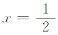
上（Comp．Rend．，158，1914，1012-1014＝Coll．Papers，2，6-9）。后来又由其他一些数学家取得了不少进展。(43) Bull．Soc．Math．de France，14，1896，199-220＝Œuvres，1，189-210．
(44) Ann．Soc．Sci．Bruxelles，（1），20 PartⅡ，1896，183-256，281-397．